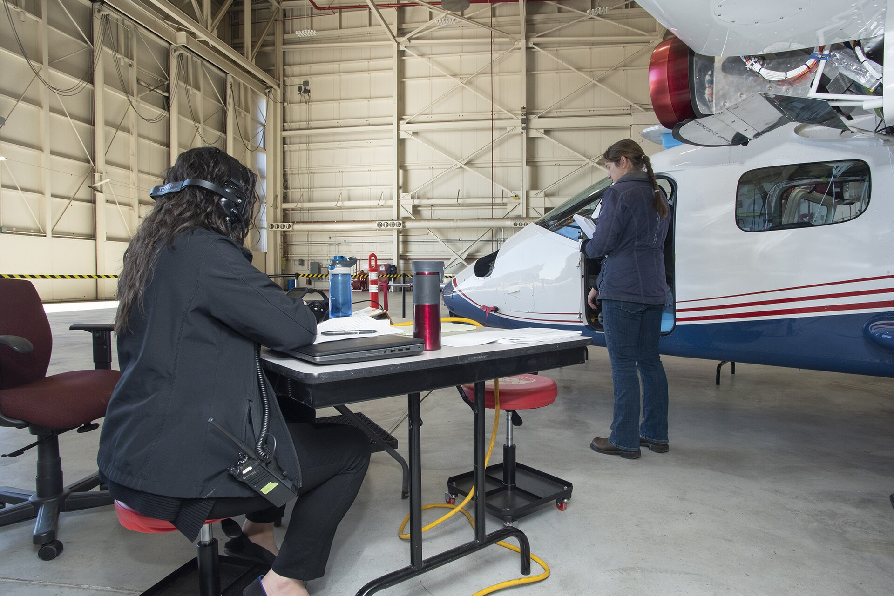
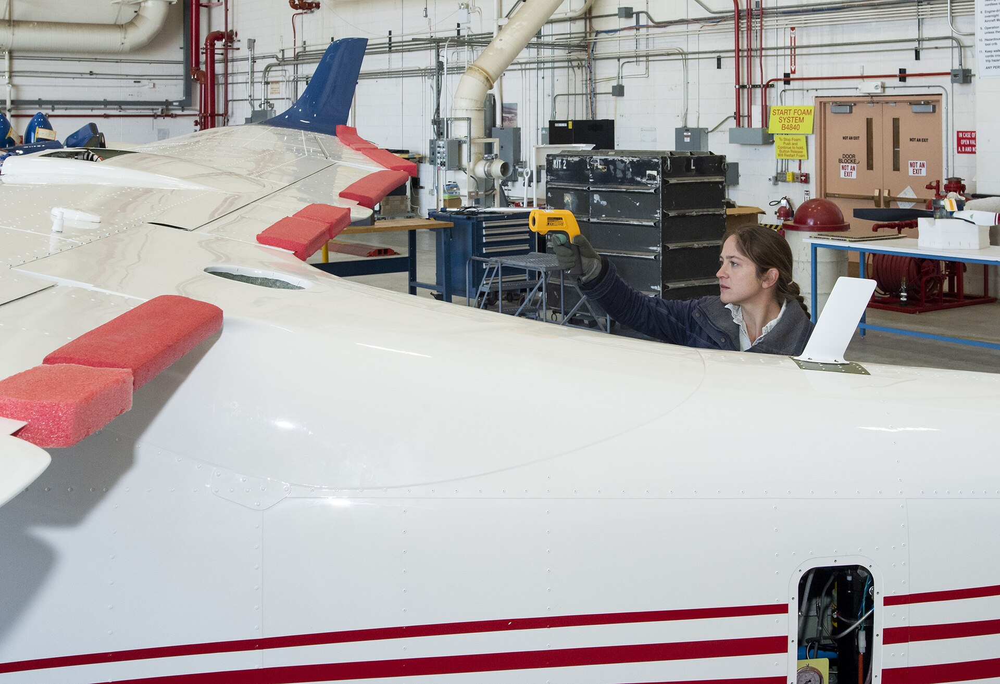

ZERO PAUSE STREAMING
An object-oriented reactive telemetry engine in ISO C++20 and C# .NET 10. Stack-allocated tumbling windows and bounded channels at sixty-six million events per second.
Four Pipeline Stages
Live Ingestion Telemetry
Verified Specifications
ISO C++20 NATIVE CORE, 66.7 MILLION EVENTS PER SECOND, ZERO HEAP ALLOCATION IN INNER LOOP, ATOMIC RING BUFFERS, 0.00 MS GC PAUSES.

Core Engine Interface
Flight Telemetry Verification

Multi-channel data acquisition racks verifying real-time packet timing under zero loss requirements.
High-throughput sensor node infrastructure deployed across synchronous real-time bus interfaces.
Deploy The Pipeline
Includes complete CMake configuration, 10 automated unit test cases, and ready-to-run telemetry benches.